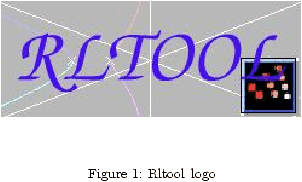

Welcome to help pages of RLTOOL, version 1.7. The latest details about RLTOOL are available at:
http://wwwa.mpi-magdeburg.mpg.de/people/ishan/scilab/rltool.htm
If you are using Rltool, you are requested to send a e-mail with the subject ``rltool'' to ishan.pendharkar@gmail.com. Your e-mail address will be kept confidential.
1.1 Description |
Rltool for Scilab is a graphics based tool for designing compensators for SISO continuous plants.
1.2 Targetted users |
The intention behind developing this package is to provide a free and easy to use tool for students taking a first course in control engineering. Learning is more fun if computer based teaching is used to supplement classroom lectures. It is intended to make Rltool for Scilab as simple and user friendly as possible and yet have some powerful and innovative features.
1.3 Features |
Handle single input single output (SISO) continuous time transfer functions.
Choose between Time Domain and Frequency Domain Design.
Edit of poles and zeros at the click of a mouse.
View various openloop and closed loop plots.
Save and Load plants as required.
1.4 How to install Rltool for Scilab |
I assume that you have obtained the file rltool1.*.tar.gz and have saved it at the location ``PATH'' on your computer. For example, I have downloaded the file in my home directory /home/ishan/ so PATH=/home/ishan
Unzip the zipped file. This has generated a directory called rltool in my home directory.
Start scilab
At the scilab prompt, type
--> exec
PATH/rltool/builder.sce (in my case exec
/home/ishan/rltool/builder.sce)
you need to do this only
ONCE. This ``compiles'' the *.sci files and generates binary files.
To ``load'' rltool into Scilab, type the following at the
Scilab prompt
--> exec PATH/rltool/loader.sce
you
will need to ``load'' rltool every time you start a FRESH scilab
session, or issue an explicit ``clear'' instruction at the Scilab
prompt
Type rlt() to start using rltool
If you are the root, you may want to ``build'' rltool once so that multiple users can access it simultaneously.
I assume that you have obtained the file rltool1.*.tar.gz and have saved it at the location ``PATH'' on your computer. For example, I have downloaded the file in my home directory C:\ishan , hence PATH = C:\ishan
Unzip the zipped file. This has generated a directory called rltool in my home directory.
Start scilab
At the scilab prompt, type
--> exec
PATH\rltool\builder.sce (in my case C:\ishan\rltool\builder.sce)
you
need to do this only ONCE. This ``compiles'' the *.sci files and
generated binary files.
To ``load'' rltool into Scilab,
type the following at the Scilab prompt
--> exec
PATH\rltool\loader.sce
you will need to ``load'' rltool
every time you start a FRESH scilab session, or issue an explicit
``clear'' instruction at the Scilab prompt
Type rlt() to start using rltool
If you are the administrator, you may want to ``build'' rltool once so that multiple users can access it simultaneously.
|
|